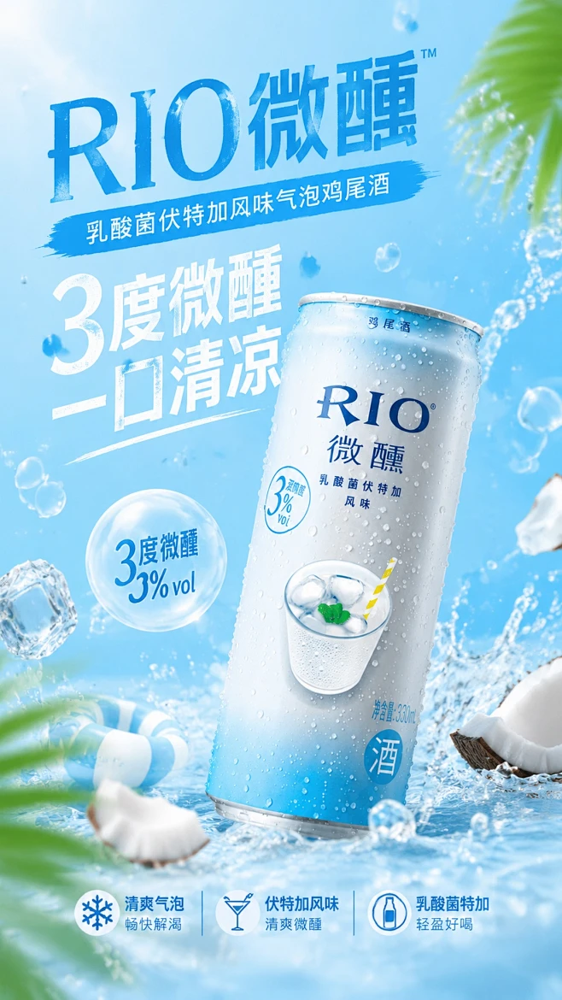
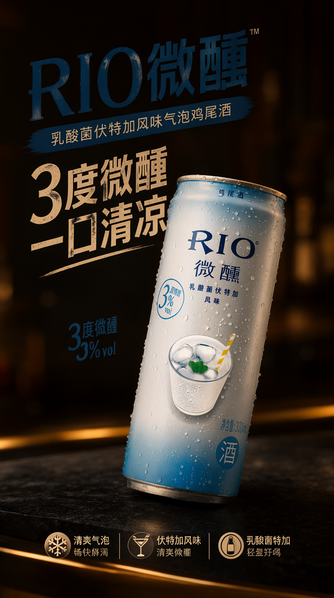

I2I PE 真的变快了吗？
是。日常 4096 上限、官方 system prompt、关闭思考，本机 12.83 秒输出合法 JSON。
同条件 A/B 印证社区最近几天反复讨论的问题，我们逐项跑了一遍。下面按“问题—答案—证据”展开，成功与失败结果都保留，方便阅读，也方便录制解说。
这些不是模型宣传点，而是本轮测试直接回答的问题。后面每一节再展开证据。
是。日常 4096 上限、官方 system prompt、关闭思考，本机 12.83 秒输出合法 JSON。
同条件 A/B 印证不能。虽然快到 4.03 秒，却会凭空虚构原图细节。
错误用法可作快速模式，但密集文字在 1024 / 4096 下都出现遗漏，不能当精确排版保证。
需要校验不是。1440² 下从 1 图到 5 图，耗时由 48 秒升至 394 秒。
控制图数Mask 局部编辑、画风迁移和透明抠图最稳定。
表现突出精确改机位和保留包装中文，目前仍不可靠。
明确边界不是模型突然快了几十倍，而是部署链变了。17,708 字的官方 system prompt 会增加预填充成本，thinking 会进一步放大耗时。日常推荐“官方 system prompt + thinking=false + 4096”；完整思考模式能完成，但要等一分多钟。
应该。断开后虽然只需 4.03 秒，但模型失去视觉依据，会虚构项链、玫瑰等原图不存在的内容。
可作为日常快速模式，但仍要做字段校验。I2I 官方模板关闭思考可稳定输出合法 JSON；T2I 官方模板的密集文字任务能完整结束，却仍遗漏精确文字。关闭 thinking 解决速度，不等于解决忠实度。
最大长度是上限，不是固定生成量。密集文字任务在 1024 与 4096 下都约 22 秒，正常结束不会因为上限变大而自动慢四倍；4096 提供的是防截断余量。但它不能保证精确文字，两个上限的单次对照都出现了遗漏。
| 任务 | 上限 | 思考 | 耗时 | 结果 |
|---|---|---|---|---|
| I2I，无官方 system prompt × 3 | 1024 | 关闭 | 中位 6.63s | 有可用短输出，但 0/3 官方 JSON |
| I2I，官方 system prompt × 3 | 1024 | 关闭 | 中位 11.78s | 3/3 合法 JSON |
| I2I，官方 system prompt | 4096 | 关闭 | 12.83s | 合法 JSON；日常推荐 |
| I2I，官方 system prompt × 3 | 1024 | 开启 | 中位 35.42s | 3/3 被截在思考阶段 |
| I2I，官方 system prompt × 3 | 4096 | 开启 | 中位 82.02s | 3/3 完整合法 JSON |
| T2I 密集文字 | 1024 / 4096 | 关闭 | 22.83 / 22.38s | 均完整结束，也均有精确文字遗漏 |
| I2I 模型断图 | 1024 | 关闭 | 4.03s | 虚构原图细节，结果无效 |
1440² 下，1 图约 48 秒，4 图约 293 秒，5 图约 394 秒。多一张图的代价不是线性增加，5 图比 4 图又多等约 100 秒。
日常工作流控制在 4–5 张参考图以内。模型能接更多，不代表速度、角色分配和一致性仍然划算。
局部 Mask、透明抠图和深度画风迁移表现突出；精确改变机位和保留真实包装文字仍是明显短板。
点击图片可查看大图。成功与失败样本都保留，便于直接用于视频讲解。
红色缎面礼服改为祖母绿天鹅绒，面部、姿态、耳环、玫瑰、桌面和背景基本保持，是本轮最稳定的编辑案例。
人物与可见车辆组成一个前景组，保留墨线和网点质感。结果包含 228,971 个全透明像素。
结果明确获得粗墨线、印刷网点和受限色板，同时保留雨窗人物的场景结构。人物细节有轻微漂移，但风格迁移深度明显。
人物姿态和裁切略有变化，但仍接近原来的平视回眸构图，没有形成明确的低机位三分之四正面。

原包装
广告环境结果罐体结构和广告氛围成立，但多处中文被替换或乱码。涉及真实包装、菜单、合同和品牌物料时不能依赖一次生成。
普通用户默认用轻量四路 Skill；需要离线官方 PE、结构校验或教程研究时，再选 T8 或官方 PE。
iamyoki 自带的 6 个测试只检查字段、换行、引号、比例格式和少量禁词，不检查 400–500 词、20 句、参考图职责、精确文字遗漏和透明包装。它适合做格式冒烟，不能替代 GPU 评测。
可以。第一版先解决“普通人一句话得到可复制提示词”，官方 PE 作为下一版的实验增强，不拖慢当前交付。
默认交付。支持文生图、图片编辑、参考图创作、透明图抠图；普通模式只返回提示词，不要求下载 9B PE。
可以发布日常 4096、极简快速、官方完整质量和自动降级；记录耗时、截断与降级状态。
补测后加入正文只保留结论，技术细节按需展开，录制视频时可以直接略过。
?present=1，或加载页面后按 P，可隐藏站点导航、目录和打赏条，让正文居中铺满；再次按 P 恢复普通阅读模式。如果这份实测帮你少走了一点弯路，欢迎扫码支持。